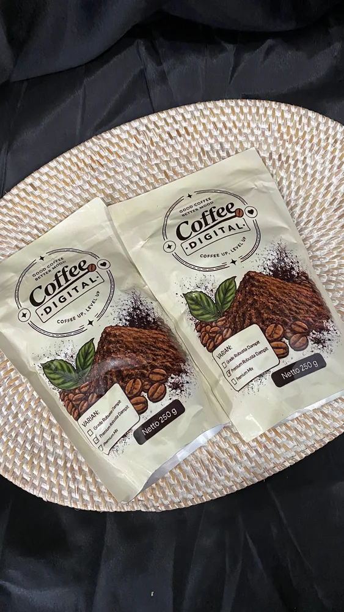

Siapa yang bisa menolak sensasi bunyi kreezz renyah ketika menggigit selembar keripik tempe khas Malang? Di antara aneka ragam camilan tradisional Nusantara, keripik tempe memegang posisi istimewa di hati masyarakat Indonesia. Bukan sekadar makanan ringan pengisi waktu luang, keripik tempe adalah representasi kearifan lokal dalam mengolah sumber protein nabati kedelai menjadi kudapan berdaya simpan tinggi, bernutrisi, dan beraroma semerbak.
Namun, pernahkah Anda bertanya-tanya mengapa keripik tempe produksi sentra pengrajin Malang memiliki tekstur yang jauh lebih rapuh renyah, tidak berminyak jenuh di lidah, dan bumbunya terasa begitu gurih merata hingga ke gigitan terakhir? Apakah ada rahasia khusus dalam resep warisan leluhur mereka? Artikel ini akan mengupas secara mendalam rahasia dapur para pengrajin tempe terkemuka, termasuk standar produksi yang diterapkan pada brand lokal Kriuk Saujana.
1. Mengapa Keripik Tempe Malang Begitu Istimewa?
1.1 Tradisi Pembuatan Tempe di Kota Dingin Malang
Kawasan Malang Raya telah lama diakui sebagai salah satu sentra industri olahan kedelai terkemuka di tanah air, khususnya di kawasan legendaris Sanan. Iklim sejuk pegunungan Malang memberikan kelembapan dan temperatur lingkungan yang sangat ideal bagi pertumbuhan jamur Rhizopus oligosporus. Miselium putih yang tumbuh pada kedelai terbentuk secara padat, homogen, dan mengikat butiran kedelai dengan sangat kokoh.
Kerapatan miselium ini sangat menentukan kualitas tempe saat diiris tipis. Pada tempe yang difermentasi di daerah yang terlalu panas atau lembap berlebih, miselium cenderung rapuh atau berair, sehingga tempe mudah hancur ketika diserut. Di Malang, tempe memiliki struktur silinder yang kompak dan elastis, menjadi bahan baku sempurna untuk keripik berkualitas premium.
1.2 Karakter Kedelai Berkualitas Tinggi
Tidak semua kedelai cocok diolah menjadi keripik. Para pengrajin berpengalaman menyeleksi kedelai kuning murni dengan ukuran seragam, berkadar air rendah, dan berkulit ari bersih. Biji kedelai yang padat menghasilkan rasa gurih alami berkarakter nutty yang kaya, bahkan sebelum dibubuhi garam maupun rempah dapur.
2. Lima Kunci Utama Menghasilkan Keripik Tempe Super Renyah
2.1 Ketebalan Irisan Presisi (Maksimal 1 Milimeter)
Rahasia pertama terletak pada ketebalan irisan tempe. Keripik tempe kelas atas membutuhkan ketebalan irisan antara 0,8 mm hingga maksimal 1,2 mm. Irisan yang terlalu tebal akan menyebabkan bagian luar gosong sementara bagian dalam masih lembap dan kenyal. Sebaliknya, irisan yang terlalu tipis akan rapuh remuk saat digoreng. Pengrajin terampil menggunakan pisau serut khusus berbahan baja anti-karat dengan kemiringan sudut presisi agar setiap lembar tempe memiliki ketebalan yang identik dari ujung ke ujung.
2.2 Marinasi Bumbu Alami Tanpa Penyedap Sintetik
Bumbu keripik tempe autentik Malang sebenarnya sangat bersahaja: paduan bawang putih kating, ketumbar sangrai, garam laut murni, sedikit kemiri, dan air perasan jeruk purut untuk aroma segar. Bawang putih kating memberikan aroma tajam yang menggugah selera, sedangkan ketumbar memberikan rasa gurih bersahaja yang tidak membuat tenggorokan serak.
Pada brand Kriuk Saujana, komitmen bebas MSG sintetis dan pengawet buatan dijaga ketat. Rasa gurih murni diperoleh dari fermentasi kedelai yang kaya asam amino alami, berpadu harmonis dengan bumbu rempah tradisional Indonesia.

2.3 Pengendalian Suhu Minyak Stabil 125°C
Inilah rahasia sains paling krusial dalam pembuatan keripik tempe. Penggorengan tidak boleh dilakukan pada minyak yang terlalu panas (di atas 150°C) karena akan membakar permukaan adonan tepung sebelum air di dalam tempe menguap sempurna.
Suhu optimal penggorengan adalah stabil pada 120°C hingga 125°C. Pada suhu ini, uap air dari irisan kedelai keluar secara perlahan, digantikan oleh minyak nabati yang mematangkan tepung beras pelapis hingga renyah keemasan. Hasilnya adalah tekstur renyah yang ringan, tidak keras bagai batu, dan tidak meninggalkan lapisan minyak tebal di langit-langit mulut.
2.4 Proses Penirisan Ganda (Dry Crisp)
Setelah diangkat dari wajan, keripik tempe tidak langsung dikemas. Tahap penirisan dilakukan sebanyak dua kali: pertama menggunakan rak tiris berkawat halus, kemudian dipindahkan ke tabung pemutar minyak sentrifugal (*spinner*) selama 90 detik. Proses sentrifugal ini melepaskan hingga 90% sisa minyak bebas yang menempel pada pori-pori keripik. Itulah alasan mengapa keripik tempe modern terasa sangat kering, bebas bau tengik, dan aman bagi mereka yang membatasi konsumsi minyak goreng jenuh.
2.5 Pengemasan Standing Pouch Kedap Udara
Musuh utama kerenyahan adalah oksigen dan uap air di udara terbuka. Begitu suhu keripik turun ke temperatur ruang, produk segera disegel ke dalam kemasan standing pouch tebal berbahan aluminium foil atau metalized pouch yang dilengkapi sistem zipper lock kedap udara. Kemasan ini mencegah masuknya kelembapan udara sehingga kerenyahan keripik dapat bertahan segar hingga 4 sampai 6 bulan tanpa membutuhkan satu gram pun bahan pengawet natrium benzoat.
3. Kesalahan Umum yang Membuat Keripik Tempe Cepat Melempem
Banyak orang mencoba membuat keripik tempe sendiri di rumah namun mendapati hasilnya cepat alot atau berbau minyak tengik setelah beberapa hari. Beberapa kekeliruan fatal yang kerap terjadi antara lain:
- Menggunakan tempe yang terlalu basah: Tempe yang baru dipanen sebaiknya diangin-anginkan sejenak agar kadar air permukaannya berkurang sebelum diiris.
- Minyak goreng digunakan berulang kali: Minyak yang sudah teroksidasi dan menghitam akan merusak aroma tempe dan membuat keripik cepat berbau apek.
- Mengemas saat keripik masih hangat: Uap panas yang terperangkap di dalam plastik kemasan akan mengembun menjadi tetesan air mikro yang memicu hilangnya kerenyahan.
- Penyimpanan di dekat sinar matahari langsung: Sinar ultraviolet mempercepat proses oksidasi lemak pada keripik, sehingga menurunkan kualitas rasa gurih alaminya.
4. Rekomendasi Camilan Harian & Oleh-Oleh Khas Malang
Bagi Anda yang merindukan kerenyahan autentik khas kota Malang tanpa repot mengotori dapur, produk Kriuk Saujana merupakan pilihan kurasi yang sangat direkomendasikan. Tersedia dalam ukuran harian praktis 100 gram (Rp 10.000) dan kemasan puas keluarga 200 gram (Rp 20.000), serta paket bundling hemat 3 pouch untuk buah tangan kerabat. Diproduksi secara higienis oleh para pengrajin lokal berbakat, setiap gigitan membangkitkan nostalgia rasa tradisional yang tak tergantikan.
5. Kesimpulan
Kerenyahan sempurna keripik tempe Malang bukanlah hasil kebetulan, melainkan perpaduan harmonis antara kekayaan bahan baku lokal bermutu, teknik pengirisan presisi, racikan bumbu rempah alami warisan leluhur, serta kendali sains pada suhu penggorengan dan penirisan minyak. Dengan memilih produk artisan yang diolah secara jujur tanpa pengawet sintetik, kita tidak hanya memanjakan lidah keluarga, namun juga turut mendukung roda perekonomian para petani kedelai dan pengrajin wirausaha lokal Nusantara.